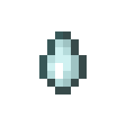
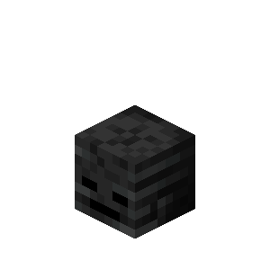
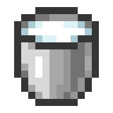

Otherworld
Netherworld
End
Adventure
Husbandry
Nether
Return to Sender
Those Were the Days
Hidden in the Depths
Subspace Bubble
A Terrible Fortress
Who is Cutting Onions?
Oh Shiny
This Boat Has Legs

Uneasy Alliance
War Pigs
Country Lode, Take Me Home
Cover Me in Debris

Spooky Scary Skeleton
Into Fire
Not Quite "Nine" Lives
Feels Like Home
Hot Tourist Destinations
Withering Heights
Local Brewery
Bring Home the Beacon

A Furious Cocktail
Beaconator
How Did We Get Here?